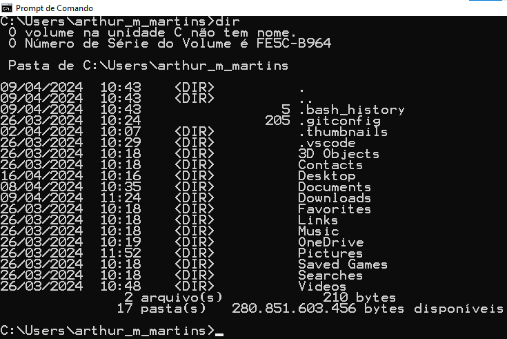

Comandos
Cls - limpa a tela
Dir - Exibe uma lista de arquivos e subdiretórios em um diretório.
Echo - Exibe mensagens ou ativa/desativa o eco de comandos.
Attrib - Exibe ou altera atributos de arquivos.
Copy - Copia um ou mais arquivos para outro local.
Erase - Exclui um ou mais arquivos.
MKDIR - Cria um diretório.
Rename - Altera o nome de um ou mais arquivos.
Start - Inicia uma janela separada para executar um programa ou comando especificado.
CD - Exibe o nome do diretório atual ou faz alterações nele.
Set - Exibe, define ou remove variáveis de ambiente do Windows.
Tree - Exibe graficamente a estrutura de diretórios de uma unidade ou caminho.
Systeminfo - Exibe a configuração e propriedades específicas da máquina.
Ver - Exibe a versão do Windows.
Type - Exibe o conteúdo de um arquivo de texto.
Set - Exibe, define ou remove variáveis de ambiente do Windows.
Replace - Substitui arquivos.
Pause - Suspende o processamento de um arquivo em lotes e exibe uma mensagem.
Help - Fornece informações de ajuda sobre comandos do Windows.
. - Monstra diretorio atual
Color - Mudar a cor do texto.
